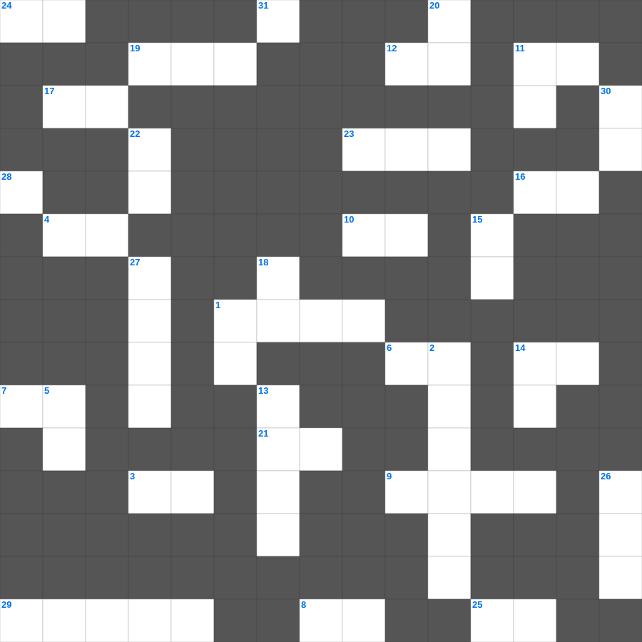

성경의 마지막 인사
📌 서비스 정의
십자가로세로는 교회 주보와 주일학교에서 사용할 수 있는 성경 기반 가로세로 퍼즐 서비스입니다. 성경 인물, 사건, 핵심 구절을 바탕으로 제작되었습니다. 온라인 풀이 및 인쇄 기능을 제공합니다.
📖 이 글은 어떤 내용인가요?
성경의 서신서들은 대부분 마지막에 인사말로 마무리됩니다. 바울은 은혜와 평강을 비는 축도로 서신을 맺었고, 요한계시록은 '주 예수의 은혜가 모든 자들에게 있을지어다'라는 인사로 끝납니다. 이 퍼즐은 성경 서신서들의 마지막 인사 표현들을 살펴봅니다.
📚 핵심 포인트
바울 서신의 축도 · 은혜와 평강의 인사 · 문안 인사의 표현들 · 요한계시록의 마지막 인사 · 아멘으로 맺는 결론
무료로 즐기는 성경의 성경의 말씀 퀴즈! 35개의 힌트로 구성된 가로세로 낱말 퍼즐입니다. PC와 모바일 모두 지원되며, 정답을 바로 확인할 수 있어 혼자서도 쉽게 풀 수 있습니다.

📝 가로 힌트
1. 눈물의 선지자로 불리는 사람
3. 아무것도 이것하지 말고 오직 기도와 간구로
4. 여호와 이것: 평강의 하나님
6. 여호와 이것: 승리의 하나님
7. 사랑, 희락, 이것
7. 이것하게 하는 자는 하나님의 아들이라 일컬음을 받음
8. 예수님이 구름을 타고 하늘로 올라가심
9. 느헤미야의 성벽 재건 기간
10. 죄의 삯은 이것이요
11. 하나님을 믿고 죄를 씻어 영생을 얻는 일
12. 마지막 재앙: 처음 난 것들의 이것
14. 예수님은 우리의 영원한 이것(길, 진리, 이것)
16. 하나님의 거룩한 성품
17. 잘못을 뉘우치고 하나님께 돌아오는 것
19. 광야 생활을 기억하며 텐트를 치는 절기
21. 열 처녀 비유에서 준비해야 했던 것
23. 솔로몬이 성전 건축을 위해 백향목을 가져온 곳
24. 하나님이 값없이 주시는 선물
25. 세상에서 가장 먼저 난 사람은?
29. 구하라 그리하면 너희에게 이것을 주실 것이요
📝 세로 힌트
1. 혼인 잔치에 이것을 입지 않은 사람
2. 신구약 성경 중 가장 짧은 장은? (숫자)
5. 나의 이것을 너희에게 주노라
11. 누구든지 주의 이름을 부르는 자는 이것을 받으리라
13. 예수님이 가르쳐 주신 기도
14. 하나님이 인간을 만드실 때 불어넣으신 것
15. 너는 내게 부르짖으라 내가 네게 이것하겠고
18. 여호와 이것: 준비하시는 하나님
20. 세례를 주는 물의 영적 의미
22. 언약궤를 덮고 있는 두 천사 형상
26. 세계 최초의 소방관은 누구일까요? (불 속에서 살아남음)
27. 성전의 기초석
28. 낮을 주관하게 하신 큰 광명체
30. 여호와 이것: 치료하시는 하나님
🧩 이 퍼즐에서 배우는 내용
이 퍼즐은 성경의 마지막 인사의 핵심 단어와 개념을 자연스럽게 복습할 수 있도록 구성되었습니다. 주일학교 수업이나 개인 성경공부에서 학습 내용을 점검하는 용도로 바로 활용할 수 있습니다.
🧑🏫 교회 교육 자료 활용
이 퍼즐은 주일학교 교재 추천 자료로 활용할 수 있고, 주일학교 주보에 넣기 좋은 분량으로 구성되어 있습니다. 수업용 주일학교 교안에 활동지로 붙이거나, 예배 후 복습용 주일학교 공과교재로 바로 사용할 수 있습니다.
🏷️ 키워드
성경의 말씀 퀴즈, 성경의, 십자가로세로, 성경퀴즈, 말씀퀴즈, 가로세로퍼즐, 주일학교 교재 추천, 주일학교 주보, 주일학교 교안, 주일학교 공과교재